Vira
Cam
Qualquer celular vira câmera do OBS pelo Wi-Fi, sem instalar nada. Feito do zero com IA e testado numa live de verdade.
Duas câmeras
que não conversavam.
Nas lives da marca, um iPhone entrava por cabo e outro pelo Wi-Fi, cada um com um aplicativo e um programa diferente no computador. Na hora da live, as duas câmeras não ficavam conectadas juntas.
Era preciso usar vários celulares como câmera, em pé, sem instalar nada e sem cair numa live de horas.
- Dois aplicativos e dois programas para duas câmeras.
- Conexão que caía no meio da live.
Abrir um link no celular e ele virar câmera do OBS, em 9:16, com até 5 celulares ao mesmo tempo.
- Nada para instalar no celular.
- Uma live dura horas: tudo precisa se recuperar sozinho.
O cabo não era
o caminho.
Antes de desenhar, pesquisei como um celular pode mandar vídeo para o computador e o que derruba uma câmera no meio da live.
Toda webcam de celular por cabo depende de aplicativo e de programa no computador. Para uma página, o cabo só serve como rede.
Do celular para o computador, sem passar por servidor. A internet só ajuda os dois a se encontrarem.
Wi-Fi que oscila, ligação que toma a câmera, tela que apaga. Cada caso ganhou uma saída automática.
O celular abre um link e vira câmera.
Uma câmera,
não um formulário.
A tela ao vivo é um visor: a imagem ocupa a tela, o estado fica numa pílula que acende em vermelho quando o OBS recebe a imagem, e os controles ficam ao alcance do polegar.
Para quem está no tripé, um toque apaga a tela sem desligar a câmera. Para quem vai entrar ao vivo, o botão “Ver como no Instagram” mostra o que a live cobre por cima da imagem.
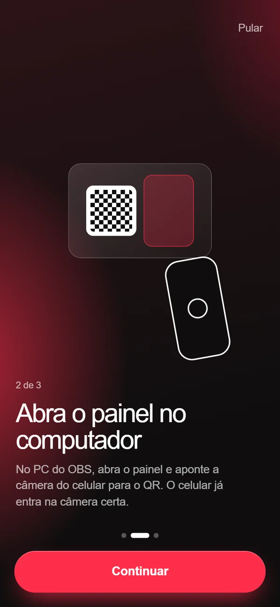
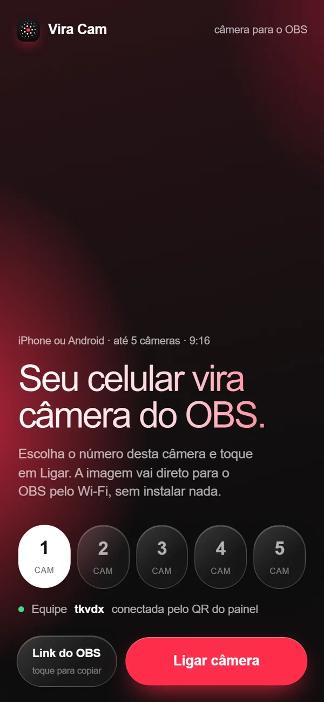
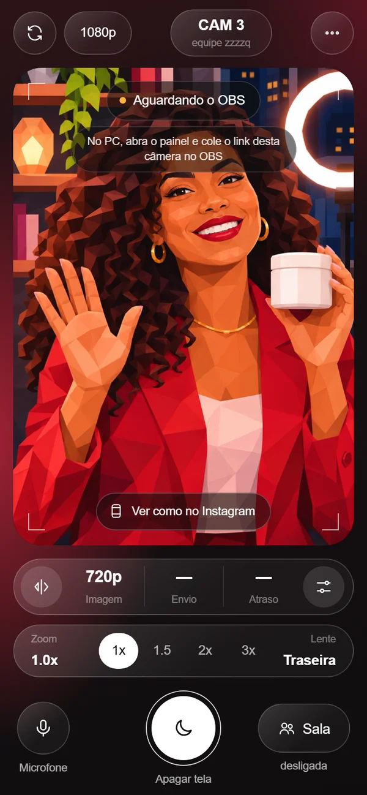
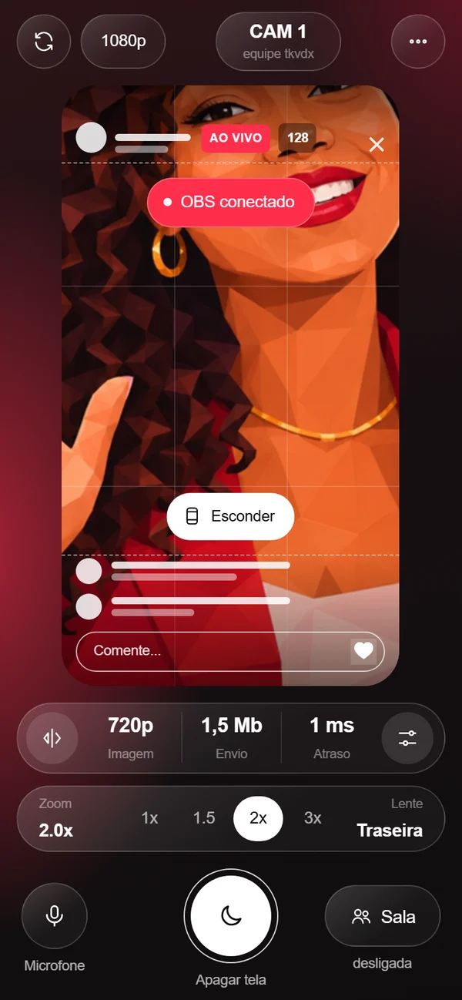
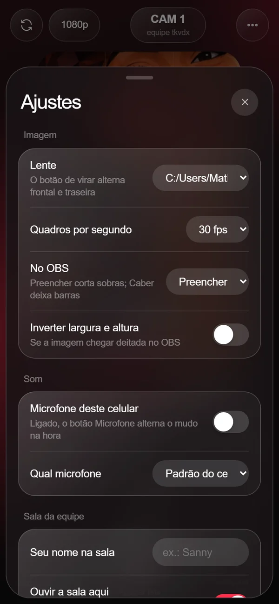
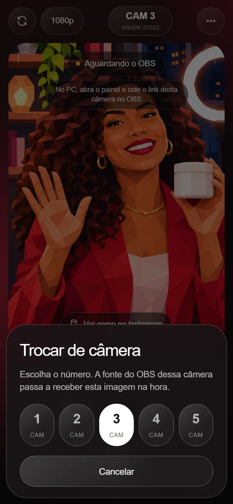
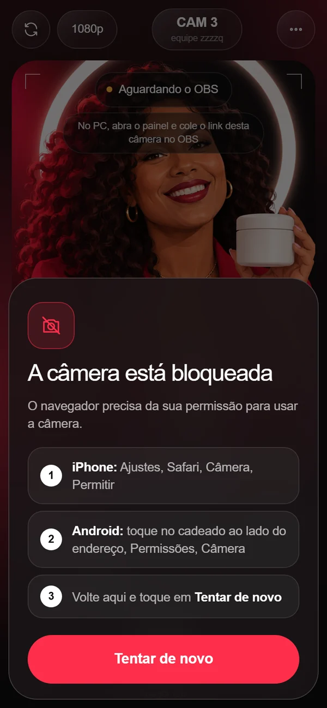
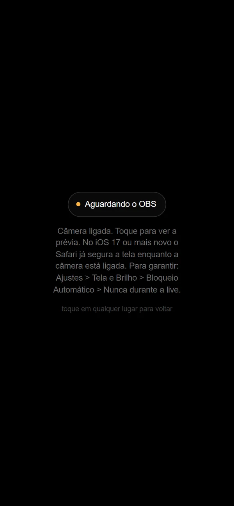
Para quem
opera o OBS.
Quem usa OBS está no computador. O painel mostra as 5 câmeras lado a lado: a câmera livre mostra o próprio QR, então basta apontar o celular para ela.
Cada câmera tem o link pronto para colar no OBS, um passo a passo de como ligar, e um clique abre a imagem grande sem pedir outro vídeo ao celular.
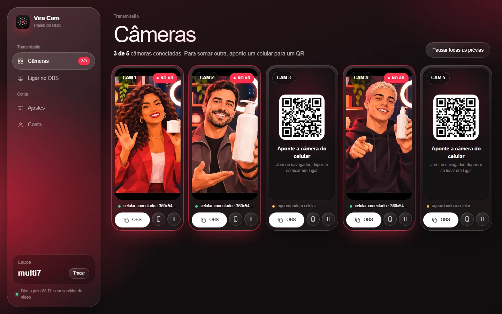
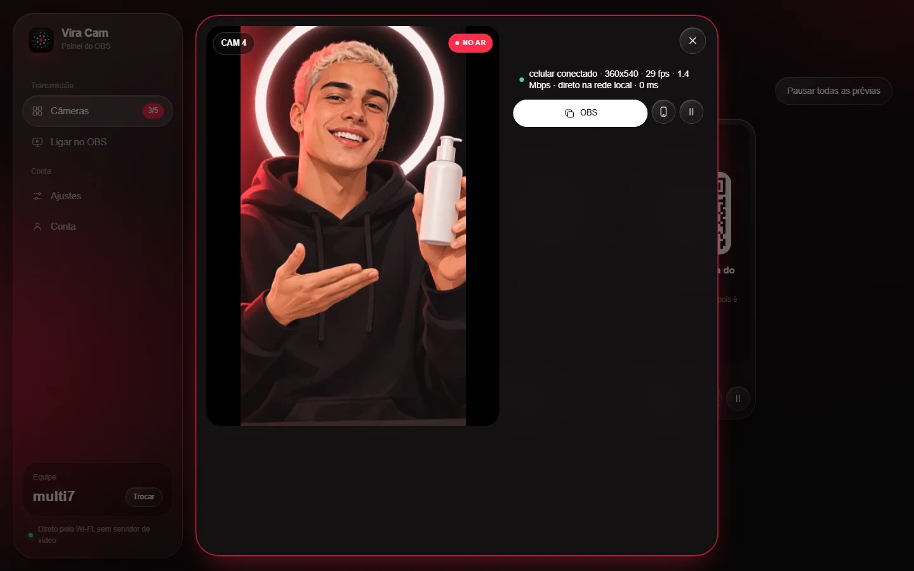
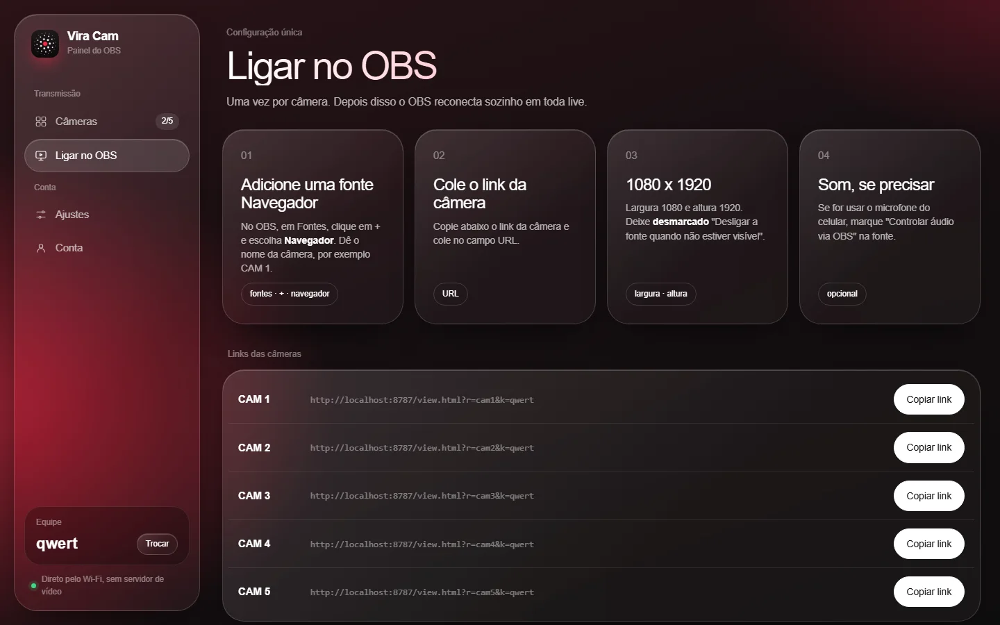
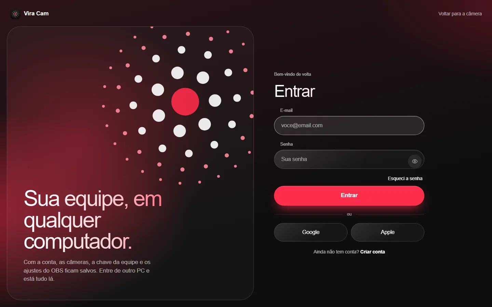
O que pesou
no desenho.
- EquipeUma chave por equipeEla vai junto no QR e no link do OBS. Nenhuma outra tela consegue puxar a câmera de quem está ao vivo.
- ZoomO zoom acontece no OBSO celular manda a imagem inteira e o OBS aplica o zoom e o enquadramento. A prévia no celular é igual ao que vai ao ar.
- VidroLeve durante a liveFora da transmissão, o vidro tem desfoque. Durante a live, vira uma camada translúcida simples, para a imagem seguir a 30 quadros por segundo.
Um sistema
só.
Celular, painel e conta usam as mesmas peças: paleta escura com o vermelho reservado para o que está no ar, Helvetica, pílulas de vidro e quatro durações de movimento.
Todas as transições estão mapeadas, com duração, curva e o que dispara cada uma.
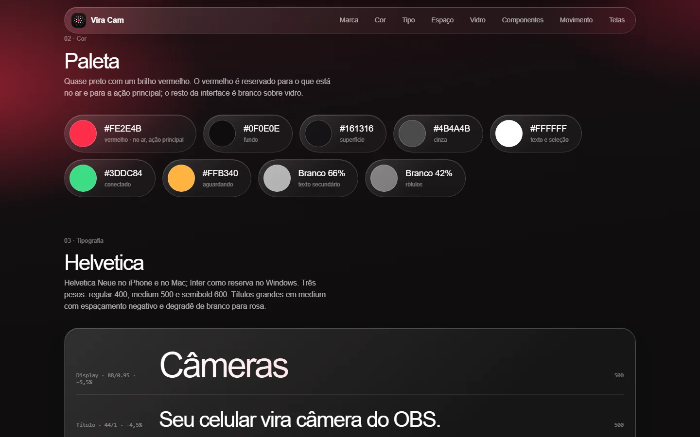
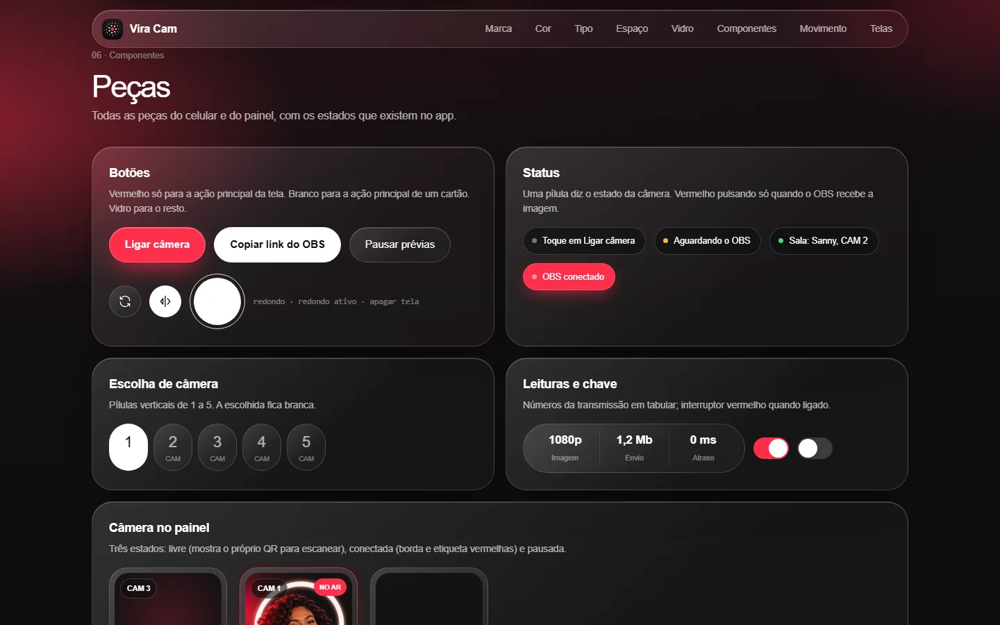
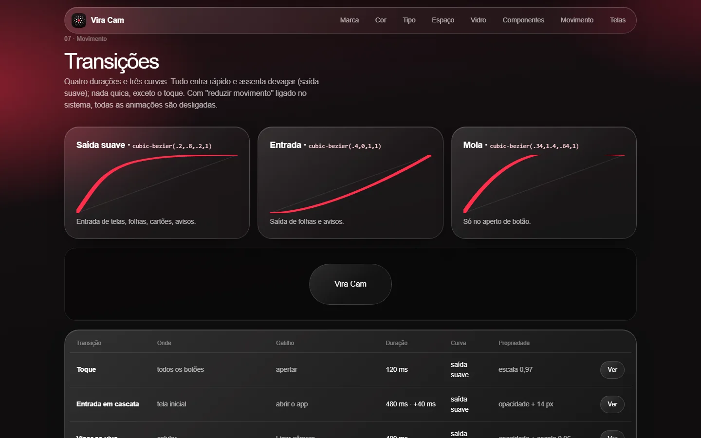
Feito do zero
com IA.
Eu defini o problema, pesquisei, desenhei o fluxo e a interface e revisei cada tela. O código, os testes e as imagens foram feitos com IA, a partir das minhas instruções.
A interface, a conexão entre celular e computador e um teste que liga 5 celulares e 5 OBS simulados a cada mudança.
As cinco pessoas que aparecem nas câmeras de exemplo e as variações do ícone.
Problema, pesquisa, fluxo, interface, design system, revisão e o teste na live.
Testado
ao vivo.
O Vira Cam rodou a live de lançamento de outubro da New Hair, do começo ao fim, no lugar dos dois aplicativos.
- Câmera no celular, painel no computador e conta.
- Tutorial da primeira vez e todos os estados de erro.
- Design system com movimento mapeado.
- Contas de verdade, ligadas ao painel.
- Versão para iPhone e Android nas lojas.
- Teste com outras equipes de live.